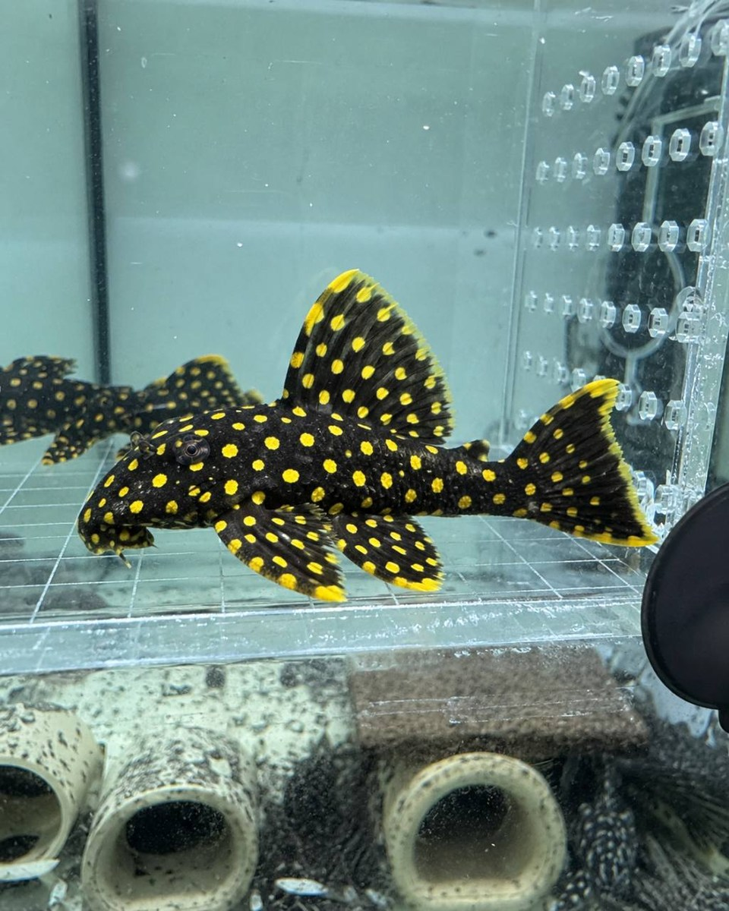

先確認個體
核對照片是否為實際魚隻，保留來源、拍攝日期與多角度特徵。
網站目前已更新八尾實際個體影像，但尚未取得可公開的到港日期、庫存、價格與品系確認，因此不把照片直接標示為現貨或新到港。
這是本次提供的實際魚隻照片；目前只描述可見外觀。是否為新到港、現貨或可交流個體，仍需由品牌方人工確認。

從原始影像到公開頁面，至少經過三個人工確認節點。
核對照片是否為實際魚隻，保留來源、拍攝日期與多角度特徵。
由品牌方確認到港日期、可交流狀態與品系依據，不依網站推測。
只公開已確認資訊；價格、數量與聯絡方式未確認前保持空白。
例如「黃金點紋異形」；這是外觀描述，不代表最終品系。
魚缸空間、目前混養、設備與可提供的躲藏條件。
來源、成體需求、食性或是否可預約賞魚，請分項列出。
網站目前不收集訂閱資料；你可以產生一份可自行複製的詢問摘要。